جدید برای شما
تماشا شده
اخیرا بازگیری شده
هنر های تجسمی
بازی های ماجرا جویی اکشن
کارتون ها
کمدی
زنده
گلچین ها
اخبار
موسیقی
بازی
همه
2:59
Saitama VS obito-Narouto 4K Fan
Animation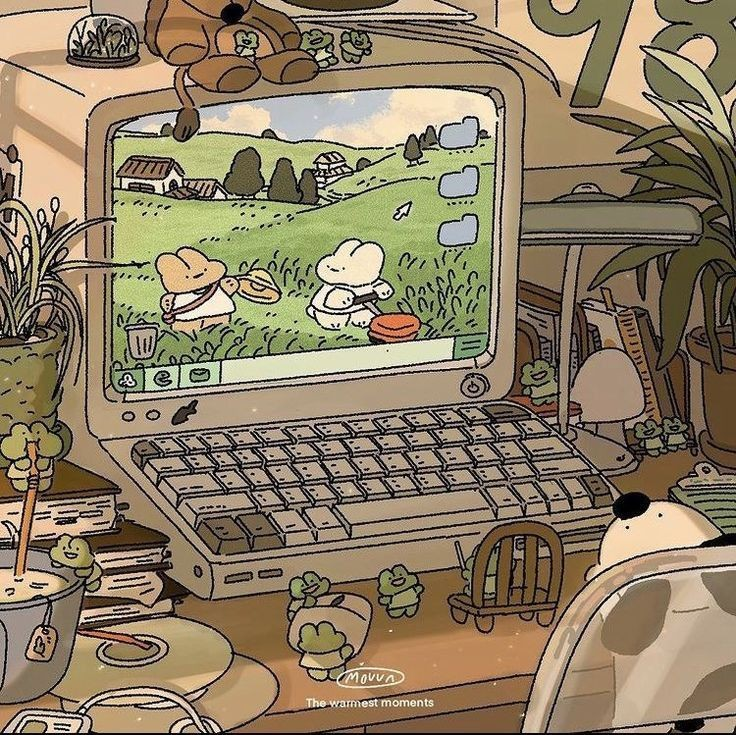
Animation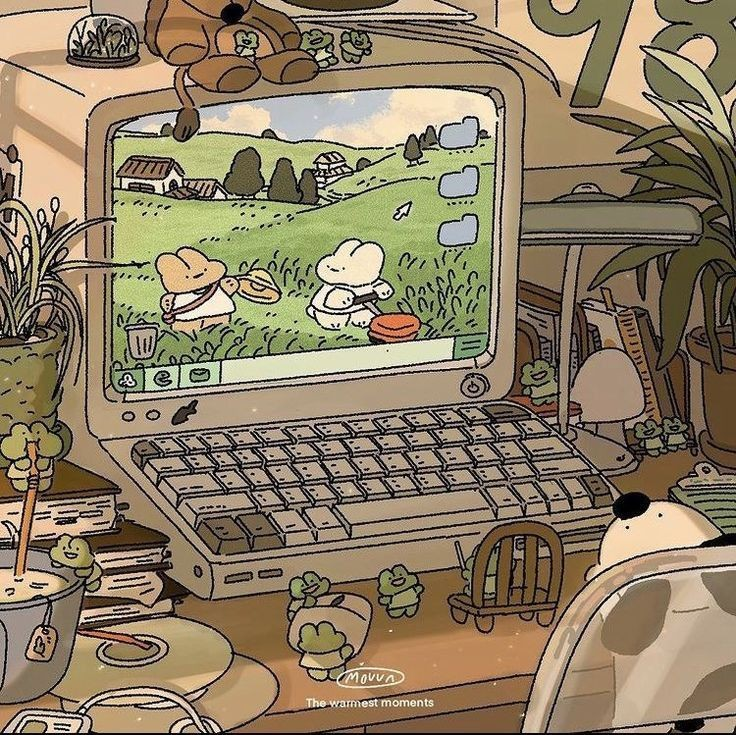
The Goaty Animation
35هزار بازدید.1 سال
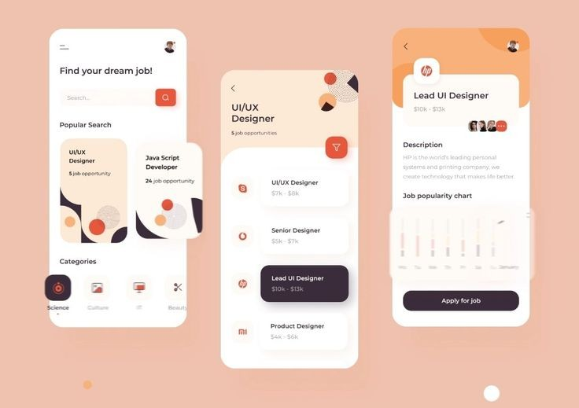
2:59
Best 20 Example UI/UX Design
for
Mobile App| UI/UX Animation 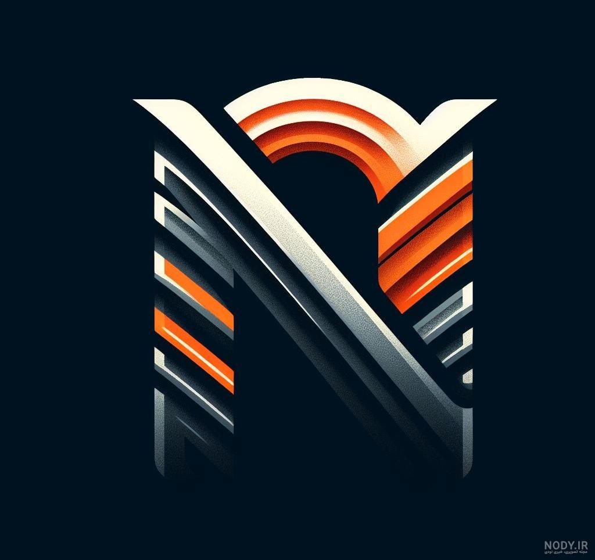
Mobile App| UI/UX Animation 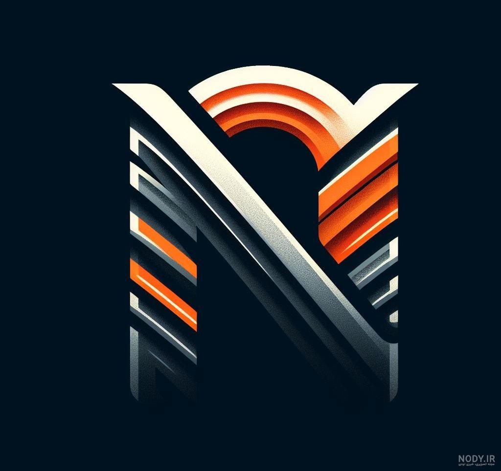
NAM Design
636هزار بازدید.4 سال پیش
2:59
javascript Tutorial Full
Course-----
Beginner to pro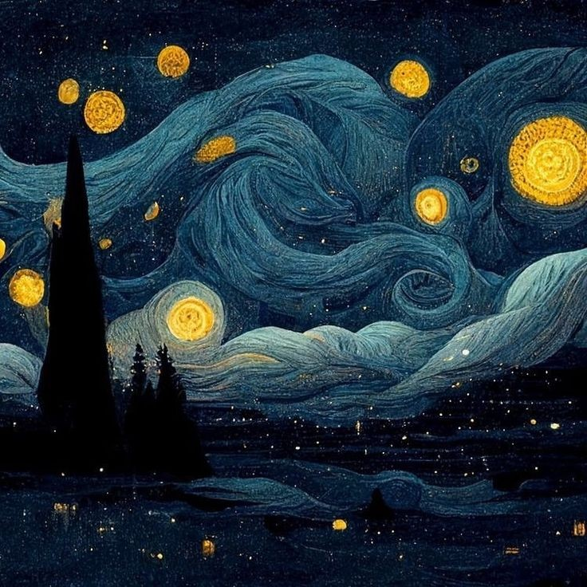
Beginner to pro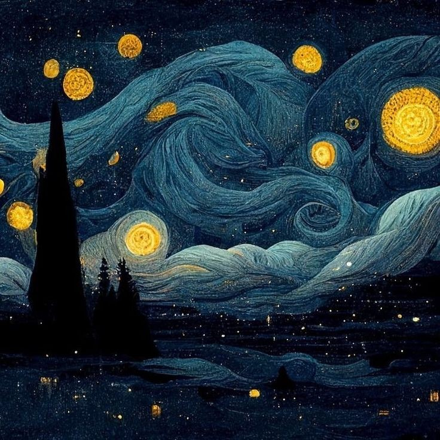
SuperSimpleDev
3.4 میلیون بازدید .1ماه پیش
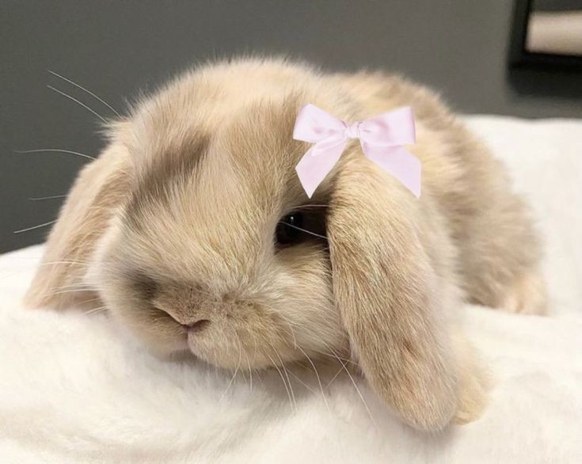
2:59
GOGGGGOLLLYYYYYYYYYYYYYYYY
bunny cute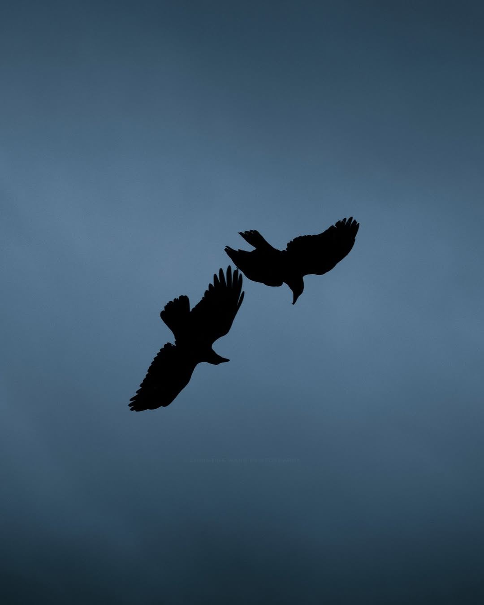
bunny cute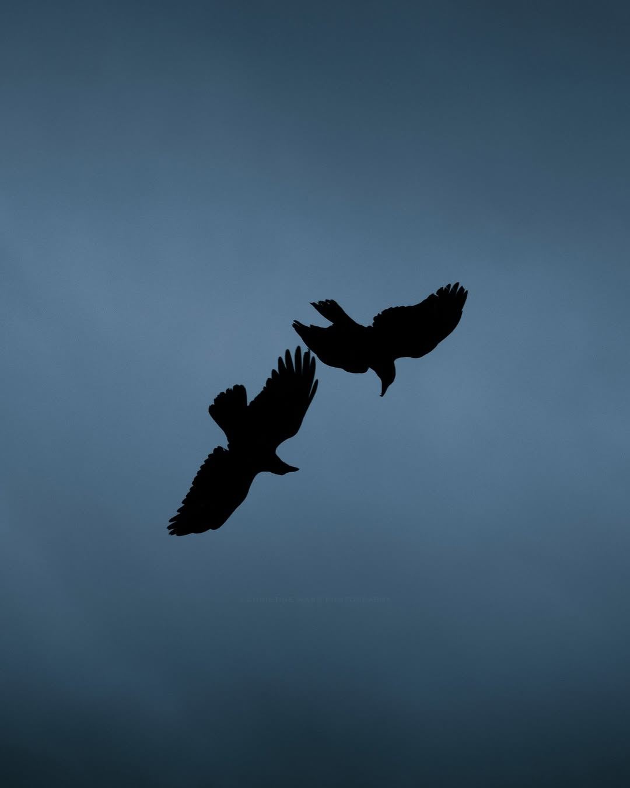
gogoly is here yesssss
40میلیون بازدید.3ماه پیش
40میلیون بازدید.3ماه پیش
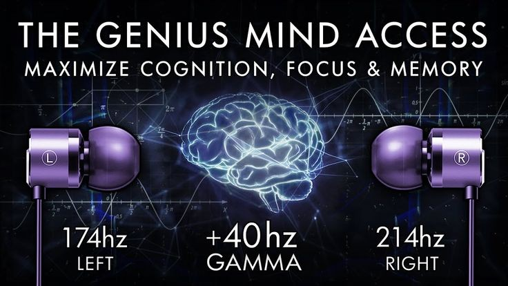
2:59
Saitama VS obito-Narouto 4K Fan
Animation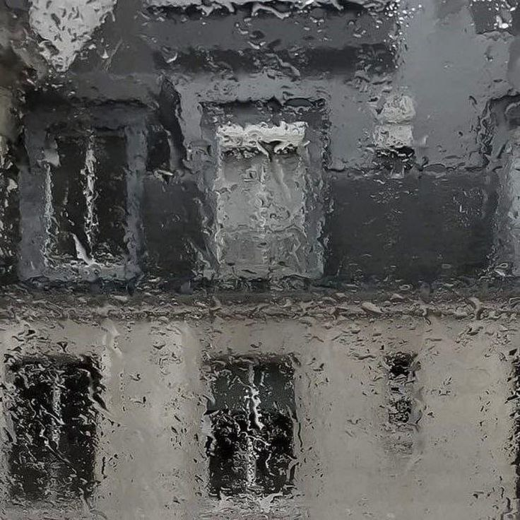
Animation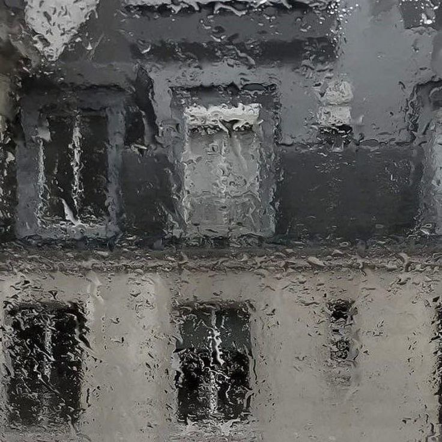
The Goaty Animation
30 هزار بازدید 2ماه پیش
30 هزار بازدید 2ماه پیش
2:59
Saitama VS obito-Narouto 4K Fan
Animation
Animation
The Goaty Animation
40هزار بازدید.2سال پیش
40هزار بازدید.2سال پیش